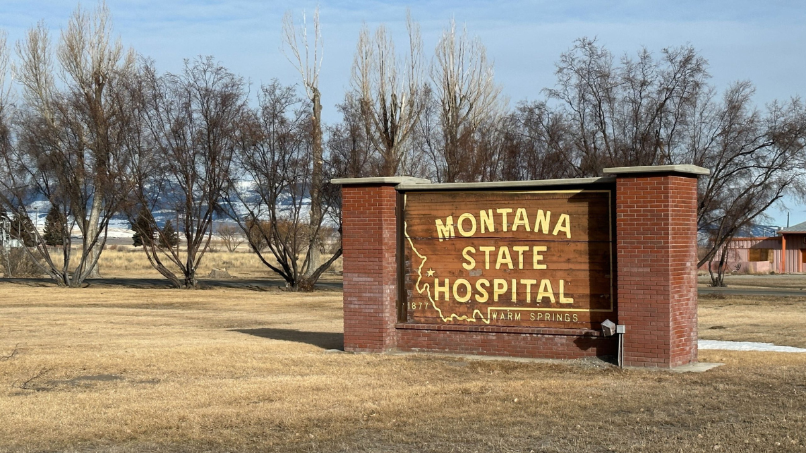
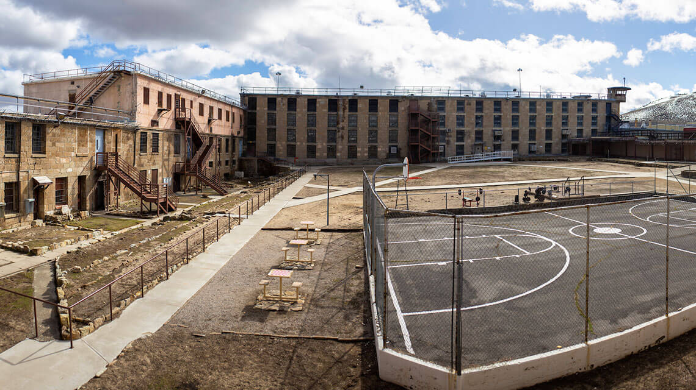
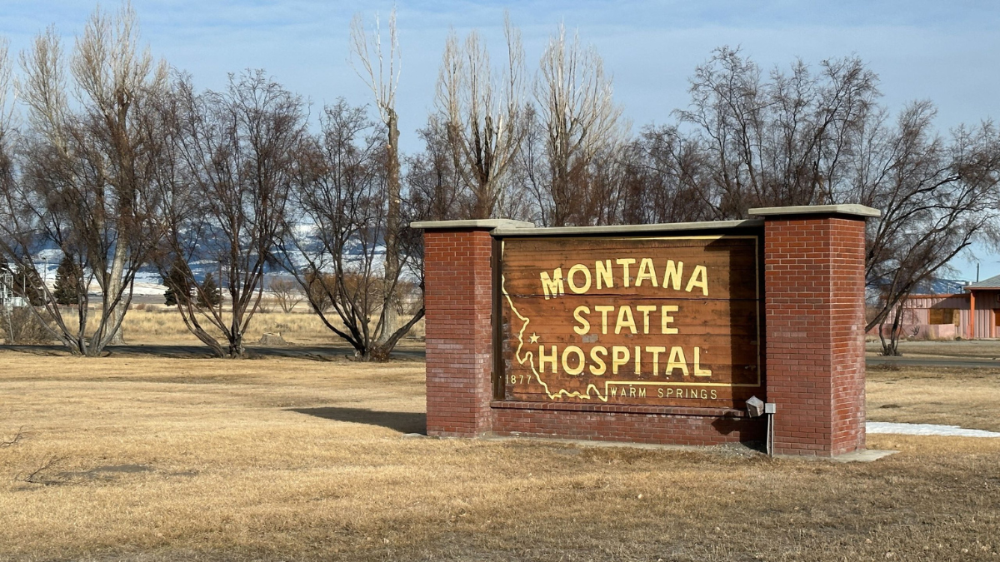
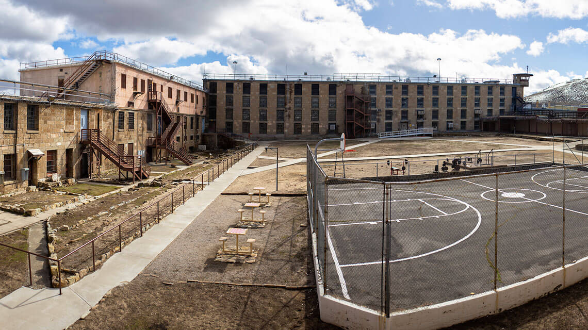

Montana — AQSHning shimoli-g‘arbiy qismida joylashgan, keng dashtlari,
tog‘lari va go‘zal milliy bog‘lari bilan mashhur bo‘lgan shtat. U 1889-yil
8-noyabrda AQSHga 41-shtat sifatida qo‘shilgan.
Geografik joylashuvi: G‘arbda Idaho, Janubda Wyoming, Sharqda North Dakota
va South Dakota, Shimolda esa Kanada bilan chegaradosh.
Hududi: G‘arbiy qismida Rokki tog‘lari joylashgan, Sharqiy va markaziy
qismi esa keng tekisliklardan iborat (Great Plains).
Iqtisodiyoti: Montana iqtisodiyoti asosan quyidagilarga tayangan: Qishloq
xo‘jaligi (chorvachilik, bug‘doy, arpa) Konchilik (ko‘mir, mis, oltin)
O‘rmonchilik Turizm — ayniqsa tabiiy bog‘lar, tog‘lar va ochiq havoda dam
olish (camping, hiking)
Diqqatga sazovor joylari: Yellowstone National Park (qisman Montanada
joylashgan) Glacier National Park — muzliklar, tog‘lar, ko‘llar bilan
mashhur Big Sky Resort — chang‘i kurorti Little Bighorn Battlefield —
tarixiy jang maydoni Flathead Lake — AQSHdagi eng katta tabiiy ko‘llardan
biri
Madaniyat: Montana Amerika kovboy madaniyati, ochiq havoda yashash uslubi
va qadimgi tubjoy amerikalik xalqlarning merosi bilan boy. Ko‘plab
festivallar, rodeo musobaqalari va tarixiy an’analar saqlanib qolgan.
 


